タイピング練習のフォルダを作成
② ZIPを展開してtypeフォルダを作成
typeフォルダに問題.htmlをコピー
使用者に配布して問題.htmlをブラウザで表示させる

タイピング練習の問題をコピーする
④ 問題のページを開く 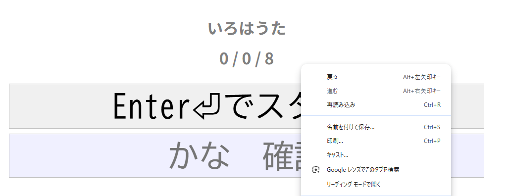 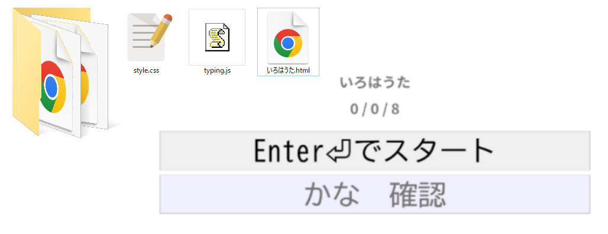
ショートカットキーを使う:Ctrl + S
問題へのリンクを右クリック 名前を付けて保存
問題.htmlをダブルクリックして表示
タイピング練習の問題を作成
⑤ type.htmlをコピー 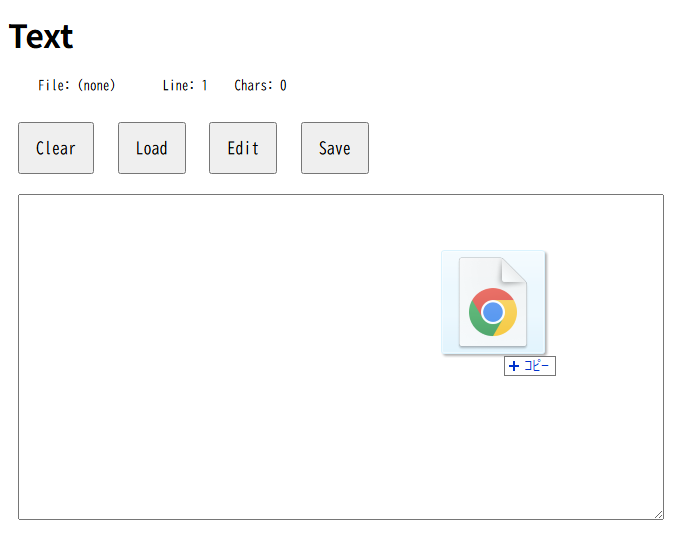 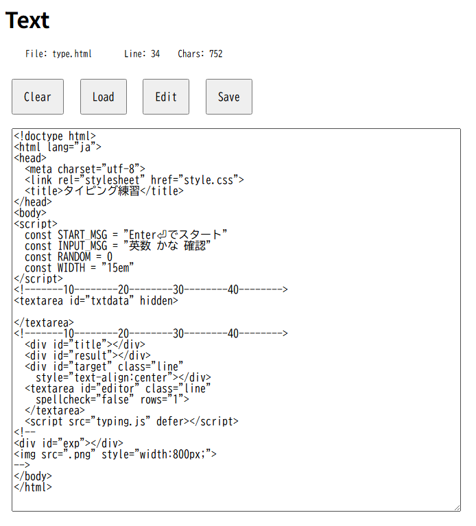
ファイル名を変更
問題を編集して保存
問題.htmlをダブルクリックして表示
text.htmlを開き、type.htmlを読み込む
タイピング練習作成用Webアプリ
⑦ ZIPを展開してtoolsフォルダを作成

⑧ toolsフォルダ内のhtmlをブラウザで開く
Text テキストエディタ
data タイピングのデータ作成
Cat3 タイピングデータの結合
filelist ファイルリスト作成
Cat3.htmlを開き、type.htmlを読み込む
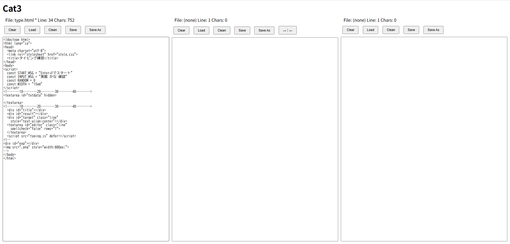
後半をコピーして貼り付ける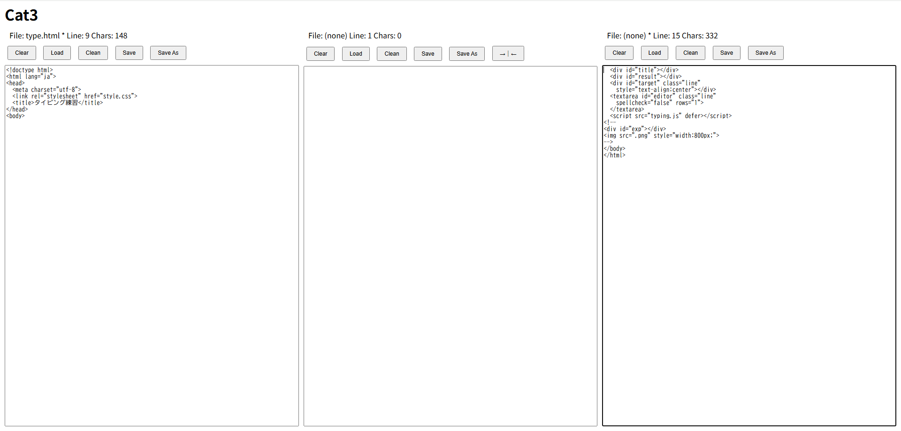
data.htmlを開きデータ部を作成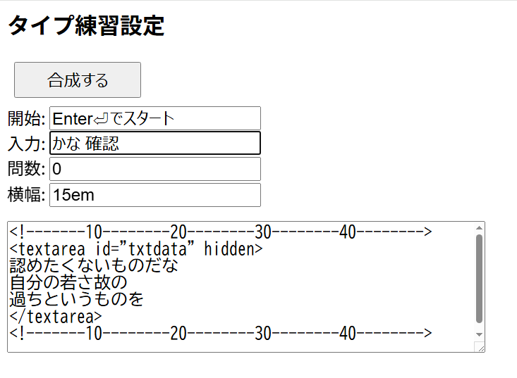
設定を合成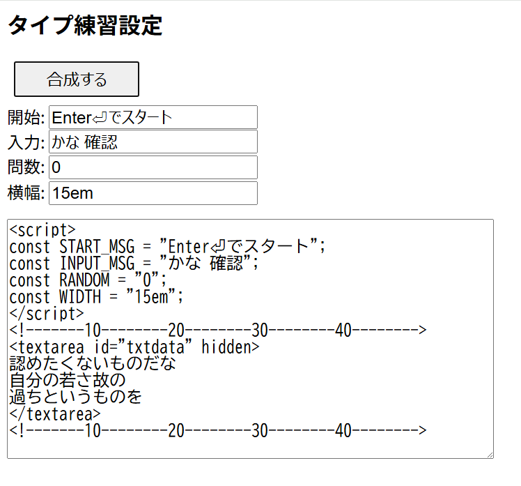
ctrl+A ctrl+Cでコピー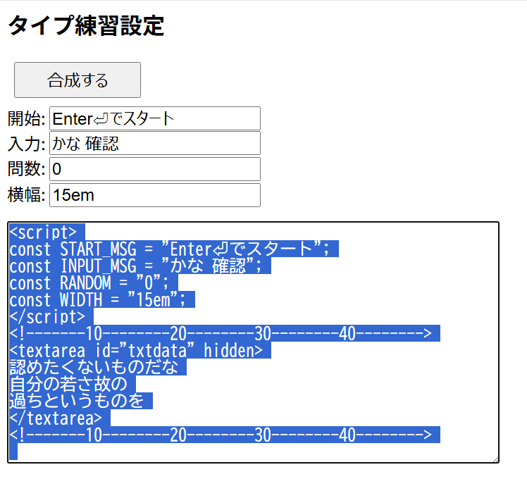
Cat3.htmlに貼り付け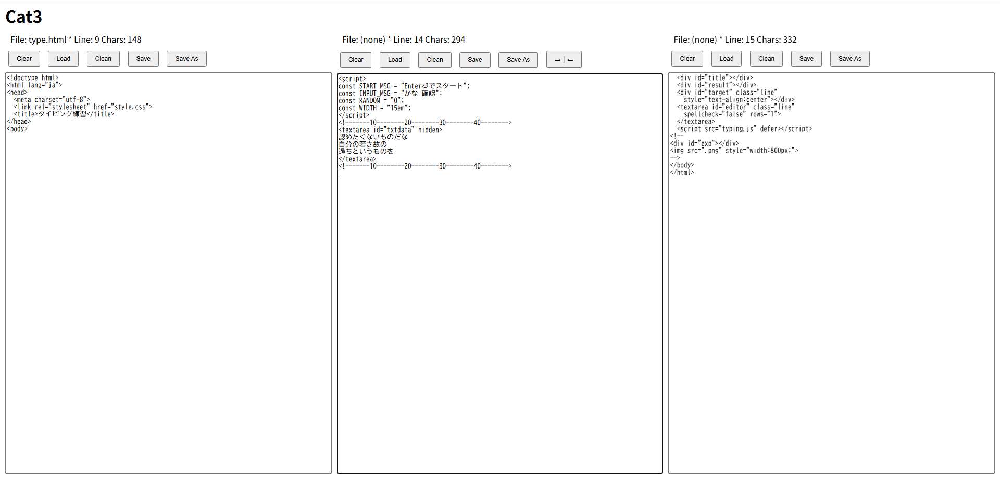
titleを入力して、Saveする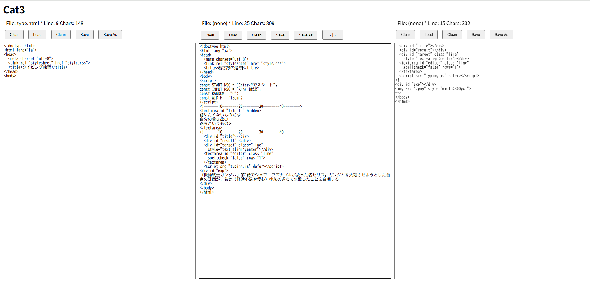
タイピング練習のメニューを作成
⑨ toolsフォルダ内のmenu.htmlを編集してメニューを作る
⑩ menu.htmlをtypeフォルダにコピー